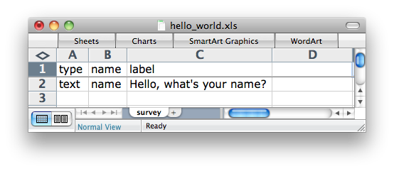

Your browser doesn't support the features required by impress.js, so you are presented with a simplified version of this presentation.
For the best experience please use the latest Chrome, Safari or Firefox browser. Upcoming version 10 of Internet Explorer should also handle it.
Authoring Surveys with XLSForms

Why XLSForms?
- Human readable
- Easy to adapt and share (hello google docs!)
- Good data standard!
| text | String / alpha-numeric text input |
| integer | Round number |
| decimal | Number with decimal support |
| date | Date selector |
| photo | Photo widget |
| geopoint | GPS location |
| note | Display note on form |
| barcode | read barcodes |
| select_one | Select only one option |
| select_multiple | Select all options that apply |
| metadata | data available from the phone |
type name label text name Name
type name label integer age What's your age?
type name label decimal pi What is Pi?
type name label date birth_date What day where you born?
type name label photo photo_rainbow Take a picture of the rainbow
type name label geopoint party_location Where's the party at?
type name label note thankyou_note Thank you for submitting the survey
type name label barcode patient_id Scan Patient's ID's Barcode
Requires Barcode Scanner App from ZXing
| SURVEY | |||
| type | name | label | |
| select_one yes_no | like_pizza | Do you like Pizza? | |
| CHOICES | |||
| list name | Name | Label | |
| yes_no | yes | Yes | |
| yes_no | no | No | |
| SURVEY | |||
| type | name | label | |
| select_multiple pizza_toppings | favorite_toppings | Pizza is best with | |
| CHOICES | |||
| list name | Name | Label | |
| pizza_toppings | cheese | Cheese | |
| pizza_toppings | pepperoni | Pepperoni | |
| pizza_toppings | sausage | Sausage | |
| start | Start date and time of the survey. |
| end | End date and time of the survey. |
| today | Day of the survey |
| deviceid | Unique IMEI (International Mobile Equipment Identify) of the device |
| sim_serial | SIM Serial Number |
| phone_number | Phone number of the SIM (not always available) |
| Hints | Instructions for a question |
| required | Requiring answers |
| default | Default answers |
| constraints | Constraining question responses |
| relevant | Skip-logic |
| Language Support | Forms in multiple languages |
| barcode | read barcodes |
type name label hint geopoint store_name Where are you? You must be outside for the GPS to work.
* Default = no
type name label required select_one yes_no registered_vote Did you register to vote? yes
type name label default integer magic_number What's the magic number?' 3
type name label constraint constraint_message integer age How old are you? . <= 150 You can't be that old!
type name label relevant select_one yes_no likes_pizza Do you like pizza? select_multiple pizza_toppings favorite_topping Favorite toppings? ${likes_pizza} = 'yes' note pizza_hater Are you crazy!? ${likes_pizza} = 'no'
type name label::English label::Español integer age How old are you? ¿Cuántos años tienes?
type name label calculation decimal amount Meal cost? calculate tip (Label not required) ${amount} * 0.18 note tip_display 18% tip = ${tip}
type name label relevant being group mother Mother ${gender} = "f" text mother_name Mother's name' integer number_children Num Children end group
type name label relevant being repeat child Child ${number_children} > 0 text child_name Child's name date child_dob Child's birthdate end repeat
Use a spacebar or arrow keys to navigate